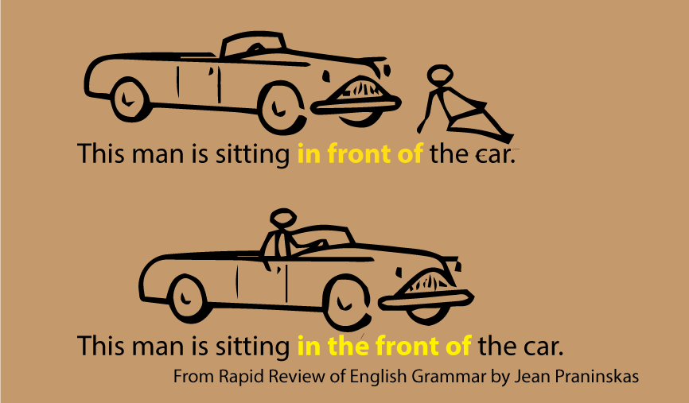

HOME
NOUN(คำนาม)
คำนาม คือ คำที่ใช้แทนชื่อ คน สัตว์ สิ่งของ สิ่งที่เป็นนามธรรม ต่าง ๆ เช่น
John, horses, Covid-19, goodness และ democracy เป็นต้น
คำนามมีหลายชนิด แต่ที่น่าสนใจ มักจะออกสอบอยู่เสมอ เช่น
นามนับได้(Countable Noun) VS นามนับไม่ได้(Uncountable Noun)
- คำนามนับได้ เช่น pencil, book, pot, pan เป็นต้น
- คำนามนับไม่ได้ เช่น water, milk, democracy, goodness เป็นต้น
- คำนามนับไม่ได้ ที่น่าสนใจ
information, furniture, corn, transportation, equipment, progress, news, luck, fun, work
- คำนามนับได้ ใช้กับ article a/an และ the ได้ เช่น a book, an egg, the earth เป็นต้น
คำนามนับไม่ได้ ไม่ใช้กับ a/an และไม่เป็นพหูพจน์ เติม s ไม่ได้
We’re going to get new furniture for the living room. ✔
We’re going to get a new furniture for the living room.
We’re going to get new furnitures for the living room.
The photographer came early to set up his equipment. ✔
The photographer came early to set up his equipments.
They can give you some information about accommodation at the tourist office. ✔
They can give you some informations about accommodations at the tourist office.
- คำนามนับไม่ได้ ถ้าจะนับ ต้องมีคำมาช่วยคล้ายกับลักษณนาม ของภาษาไทย เช่น
corn(ข้าวโพด) - an ear of corn(ข้าวโพด 1 ฝัก), two ears of corns
soap(สบู่) - a bar of soap(สบู่ 1 ก้อน), two bars of soap
water(น้ำ) - a glass of water(น้ำ 1 แก้ว), two glasses of water
furniture - a piece of furniture
news - bits of news
bread - a loaf of bread, two loaves of bread
fish - a school of fish(ฝูงปลา ว่ายไปด้วยกัน ไปไหนไปด้วยกัน ไม่แตกฝูง), a shoal of fish(กลุ่มปลา ปลามารวมกัน แต่ไม่ใช่ฝูงเดียวกัน)
-
คำนามนับได้ สามารถมีคำ article คือ a, an และ the นำหน้า ส่วนนามที่นับไม่ได้ จะใช้ a หรือ an นำหน้าไม่ได้ (ให้ดูเรื่อง การใช้ a, an และ the นะครับ)
a book, a pen, an egg, an umbrella, an hour
water, rice, milk, goodness
-
คำนามบางคำ มีรูปเป็นพหูพจน์ แต่เป็นคำนามนับไม่ได้ เพราะเราไม่สามารถใช้ตัวเลขนับ นำหน้าคำเหล่านี้ได้ เช่น trousers(กางเกงขายาว), shorts(กางเกงขาสั้น), pants(กางเกงขาสั้น), pyjamas(กางเกงนอน), glasses (แว่นตา), binoculars(กล้องส่องทางไกล), scissors(กรรไกร)
I bought two pairs of trousers. ✔
I bought two trousers.
เอกพจน์ (Singular Noun) VS พหูพจน์ (Plural Noun)
คำนามที่นับได้ (Countable Noun) เมื่อมีมากกว่า 1 จะเป็นพหูพจน์ โดยการเติม s เข้าข้างท้ายคำ แต่
-
คำบางคำมีรูปเหมือนกันทั้งเอกพจน์และพหูพจน์ เช่น
sheep(แกะ), crossroads(สามแยก-สี่แยก), deer(กวาง), dice(ลูกเต๋า), fish(ปลา), furniture, information
ยกเว้น
fish ถ้าหมายถึงปลาหลายชนิด จะใช้เป็น fishes
-
คำบางคำเมื่อเป็นพหูพจน์ เปลี่ยนรูปไปเลย เช่น
foot - feet, man -men,
-
คำบางคำ ลงท้ายด้วย -s แต่เป็นเอกพจน์ เช่น
news, billiards, bowls เป็นต้น
Billiards is my favourite game.
VERB (คำกริยา)
Verb ในภาษาอังกฤษ แบ่งออกเป็น 2 ชนิดคือ main verb (กริยาหลัก หรือกริยาแท้) เช่น walk, run, become เป็นต้น และ helping verb(กริยาช่วย) เช่น be(is/am/are/was/were), can, could, may, might เป็นต้น
- Verb Tense ให้ดูเรื่อง Tenses
- กริยาบางคำ อาจจะตามด้วย Infintive หรือ Infinitive without to หรือ Gerund ให้ศึกษาเรื่อง Infinitive และ Gerund
- กริยาบางคำ อาจจะมี prepositon หรือ adverb ร่วมอยู่ด้วย เรียกว่าเป็น two-word verb หรือ phrasal verb ซึ่งจะมีความหมายเปลี่ยนไปจากเดิม ให้ศึกษาเรื่อง ทบทวน Phrasal Verbs/ Two-word Verbs/ กริยาวลี
- กริยาบางคำ เป็น irregular verbs คือ แทนที่จะเติม -ed เข้าท้ายคำ เมื่อเป็น กริยาช่อง 2 (past) หรือ ช่อง 3 (past participle) แต่อาจจะเปลี่ยนรูปไป หรือยังเหมือนเดิม เช่น
build-built-built(สร้าง)
see-saw-seen (มองเห็น)
cost-cost-cost (ราคา)
lie-lay-lain(นอน)
lay-laid-laid (วางลง, ออกไข่)
lie(พูดโกหก) เป็น regular verb เติม -ed
คำกริยาที่มักใช้สับสน
- lie VS lay
lie (อยู่ในสถานะที่ขนานกับพื้น/เอนตัวลง/นอน)
lie-lay-lain
I lie down on my bed. (ฉันนอนบนเตียง)
I lay down on my bed yesterday. (เมื่อวาน ฉันนอนบนเตียง)
lie (พูดเท็จ)
lie-lied-lied
เป็น regular verb เมื่่อเป็น Past ก็เติม -ed ตามปกติ
He lied to me about his age. (เขาได้โกหกกับฉันเกี่ยวกับอายุของเขา)
lay (วางสิ่งใดสิ่งหนึ่งลง/ออกไข่)
lay-laid-laid
จะต้องมีกรรมมารองรับ ว่า วางอะไร เช่น
I lay the tools on the table. (ฉันวางเครื่องมือลงบนโต๊ะ)
I laid the tools on the table yesterday. (เมื่อวาน ฉันได้วางเครื่องมือลงบนโต๊ะ)
The chicken laid 3 eggs yesterday. (แม่ไก่ออกไข่ 3 ฟองเมื่อวาน)
ระวังเรื่องตัวสะกด
Suda is lying down on her bed.
Somsak is laying his tools on the table.
- borrow VS lend
borrow(ขอยืม)
Can I borrow ฿20 from you, please?
ให้ฉันขอยืมเงินคุณ 20 บาท ได้ไหม
Can I lend ฿20 from you please?
lend(ให้ยืม)
I can lend you ฿20
- say VS tell
say(พูดว่าอะไร)
say จะเน้นที่สิ่งที่เป็นคำพูด มักจะไม่มีกรรม หรือใครมาต่อท้าย แต่ถ้ามี ต้องมี to คั่น หมายถึงว่า บอกใคร
The weatherman said (that) it would rain today.
If you see Jill, say hello from me.
If you see Jill, tell hello from me.
tell (บอกแก่ใคร)
จะต้องมีกรรมมารับ เช่น
I've already told you the answer three times.
I've already said you the answer three times.
สำนวนที่ใช้ say/tell
สำนวนต่อไปนี้ ใช้ say หรือ tell จะใช้อย่างอื่น ไม่ได้
The clock says ten-thirty. (นาฬิกาบอกเวลา)
The clock tells ten-thirty.
tell the truth
say the truth
tell the time
say the time
tell a story/stories (เล่าเรื่อง)
tell a joke/jokes (เล่าเรื่องตลก)
tell a lie/lies (พูดโกหก)
So you say. (ใช่ ตามความคิดของคุณ [แต่ผมไม่เห็นด้วย])
Easier said than done. (พูดง่าย ทำยาก)
It goes without saying. (ชัดเจนอยู่แล้ว)
- speak VS talk
speak (พูด) ใช้กับภาษา หรือการพูดโดยทั่ว ๆ ไป ค่อนข้างเป็นทางการ มากกว่า talk เช่น
speak English(พูดภาษาอังกฤษ) ไม่ใช่ talk English
แต่ talk in English(สนทนาเป็นภาษาอังกฤษ) ใช้ได้
ตัวอย่าง
I speak English. (ฉันพูดภาษาอังกฤษ)
Does Donna speak Italian?
Emma is going to speak in front of 500 people at the conference.
We spoke to the boss this morning. (ฉันพูดกับหัวหน้าแล้วเมื่อเช้า)
I need to speak with you about the new project. (อยากจะคุยเกี่ยวกับโครงการใหม่กับคุณหน่อย)
speak to และ speak with มีความหมายเหมือนกับ talk
talk (คุย)
ใช้เหมือน speak แต่ใช้กับเหตุการณ์ที่ค่อนข้างเป็นกันเอง เนนที่การพูดคุยแบบไม่ใช่ทางการ และ ใช้ในสำนวน ต่อไปนี้ เช่น
talk business (คุยธุรกิจ)
talk politics (คุยการเมือง)
talk sense (พูดมีเหตุมีผล)
talk in circles (พูดอ้อมค้อม วกวน)
- do VS make
do (ทำ)
ใช้กับงานภารกิจที่ต้องทำ หรือกิจกรรมที่ทำซ้ำ ๆ เช่น งานบ้าน การงานอาชีพ การทำเกี่ยวกับร่างกาย เช่น ออกกำลังกาย และการกระทำดี-เลวต่าง ๆ เช่น
do the housework (ทำงานบ้าน)
do the laundry(ซักผ้า)
do the dishes(ล้างจาน)
แต่ปูที่นอน ใช้คำว่า make the bed
do homework (ทำการบ้าน)
do business (ทำธุรกิจ)
do your hair (ทำผม)
do well (ทำได้ดี ทำสำเร็จ)
I did well on my exam.
do good (ทำความดี)
To do well by doing good. (ความสำเร็จเป็นผลมาจากการทำความดี)
do badly (ทำได้ไม่ดีเลย)
do your best(ทำให้ดีที่สุด)
make (ทำ/สร้าง)
ใช้กับ การสร้างสิ่งของ วัตถุ ใช้กับอาหาร เงิน ความสัมพันธ์ระหว่างบุคคล การสื่อสาร การวางแผน ความก้าวหน้า และอื่น ๆ เช่น
make a table (ทำโต๊ะ)
make breakfast (ทำอาหารเช้า)
make money (ทำรายได้)
make a profit (ทำกำไร)
make friends (สร้างมิตรภาพ)
make fun of someone (ล้อเลียนคนอื่น)
make a phone call (ต่อโทรศัพท์)
make a joke (ทำตลก/พูดตลก)
make a complaint (ร้องเรียน)
make a confession (สารภาพ)
make a speech (ปราศัย)
make a suggestion (ให้ข้อเสนอแนะ)
make a prediction (ทำนาย)
make an excuse (แก้ตัว)
make a mess (ทำรก ไม่เป็นระเบียบ เลอะเทอะ ยุ่งเหยิง)
make a mistake (ทำผิด)
make a journey (ออกเดินทางท่องเที่ยว)
- advise VS advice
advise (แนะนำ) เป็นคำกริยา
Guests were advised to pay special attention to hand hygiene.
ผู้มาเยือนจะได้รับการแนะนำให้ใส่ใจเกี่ยวกับสุขอนามัยความสะอาดของมือเป็นพิเศษ
advice (แนะนำ) เป็นคำนาม
Steven gave me some good advice.
สตีเฟน ให้คำแนะนำที่ดีแก่ฉัน
ADJCETIVE
Adjective หรือ คำคุณศัพท์ ทำหน้าที่ขยายคำนามหรือสรรพนามที่อยู่ในประโยค เพื่อบอกให้รู้ว่า คำนามหรือสรรพนามเหล่านั้น มีลักษณะอย่างไร เช่น สูง ต่ำ ดำ ขาว ใหญ่ เล็ก เลว ดี ฯลฯ
คำคุณศัพท์ จะวางอยู่หน้าคำนามที่มันขยาย หรือใช้ตามหลัง verb to be หรือ ตามหลัง linking verbs เช่น look, sound, taste, feel เป็นต้น
คำที่มักใช้สับสน
- good VS well
good เป็น Adjective ใช้ขยายคำนาม
She gave me a good advice. (เธอให้คำแนะนำที่ดีแก่ฉัน)
The food taste good. (อาหารนี้ รสดี)
good ขยายคำว่า food และใช้ตามหลัง linking verb คือ taste
The food tastes well.
ที่ใช้ well ไม่ได้ เพราะ ประธาน (food) ไม่ได้ทำกริยา (taste) จึง ใช้ Adverb มาขยายกริยาไม่ได้
well เป็นคำ Adverb ขยายคำกริยา ตอบคำถามที่ขึ้นต้นด้วย How ทำอย่างไร
I did well on the exam.
I did good on the exam.
well สามารถใช้เป็น คุณศัพท์ ได้ ในความหมายที่เกี่ยวกับสุขภาพ
I am well. (ฉันสบายดี)
- older VS elder
older = มีอายุมากกว่า ใช้ได้ทั้งกับคนและสิ่งของ เช่น
She is older than I. (เธอคนนั้น มีอายุมากกว่าฉัน)
elder = อายุมากกว่า ใช้กับคนที่เป็นญาติพี่น้อง สายเลือดเดียวกัน เท่านั้น
The elder of the two sisters is more beautiful.
(ในจำนวนสองศรีพี่น้อง คนพี่สวยกว่า)
Somsak is my elder brother.
(สมศักดิ์ เป็นพี่ชายของฉัน)
ข้อสังเกต
older ตามด้วย than แต่ elder ตามด้วย of
- few VS a few VS quite a few
few = มีน้อยมาก หรือเกือบไม่มีเลย มีความหมายในเชิงลบ ใช้กับนามนับได้พหูพจน์
Sorry, I can’t make the delivery today as I have few products in the warehouse.
ขอโทษด้วยครับ ผมไม่สามารถส่งของวันนี้ได้ เพราะ มีของเหลือในโกดังน้อยมาก
a few = มีอยู่บ้าง 2-3 อัน ใช้กับนามนับได้พหูพจน์ มีความหมายเท่ากับคำว่า some
I have a few products in the warehouse. I can send you one today.
ผมมีของอยู่ 2-3 ชิ้นในโกดัง ผมส่งให้คุณได้วันนี้ 1 ชิ้น
quite a few = ค่อนข้างมาก
The letter arrived quite a few days ago.
(จดหมายมาถึงหลายวันแล้ว)
- farther VS further
farther = ไกล ใช้กับระยะทาง
We had to walk farther than the map indicated.
เราต้องเดินไกลมากกว่าที่ระบุในแผนที่
further = ต่อไป มากขึ้น ขยายต่อไปอีก
The secretary could not offer him farther assistance.
เลขาไม่สามารถให้ความช่วยเหลือเขาต่อไป
She wants to further her study abroad.
เธอต้องการศึกษาต่อในต่างประเทศ
- high VS tall
ใช้ high กับสิ่งที่เอื้อมไม่ถึง หรืออยู่สูงมาก เช่น
a high shelf, a high window
ถ้าพูดถึงการวัดความสูง ใช้ tall กับคน และมักจะใช้ high กับสิ่งของ เช่น
Steven’s 1m 80cm tall.
The tree is about 20m high tall.
ใช้ high กับสิ่้งต่อไปนี้: fences, walls, mountains, hills, ceilings, clouds.
ใช้ tall กับสิ่งต่อไปนี้: people, trees, buildings, ladders, animals.
ADVERB
Adverb หรือ คำกริยาวิเศษณ์ คือคำที่ทำหน้าที่ขยายคำ กริยา คำคุณศัพท์ หรือ คำกริยาวิเศษณ์ ด้วยกันเอง เช่น
She walks
quickly. (ขยายกริยา)
(เธอเดินเร็ว)
She walks
too quickly. (ขยายกริยาวิเศษณ์ด้วยกันเอง)
(เธอเดินเร็วเกินไป)
The banana is very sweet. (ขยายคำคุณศัพท์)
(กล้วยนี้หวานมาก)
Adverbs มีหลายประเภท เช่น
- Adverbs of manner คือ คำที่ขยายกริยา ตอบคำถามว่าทำอย่างไร (How) คำเหล่านี้ เช่น fast , well ,quickly, slowly, elegantly, rationally, thoughtfully, clumsily, expertly เป็นต้น
- Adverbs of Place คือ คำที่ใช้บอกสถานที่ ตอบคำถาม Where คำเหล่านี้ เช่น above, below, there , here , up , down เป็นต้น
- Adverbs of Time ใช้บอกเวลา ตอบคำถาม When คำเหล่านี้ เช่น now, later, yesterday, immediately, generally เป็นต้น
- Adverbs of Frequency คือ คำคุณศัพท์ที่ใช้บอกความถี่ เช่น บ่อย บ่อยมาก บ่อยน้อย หรือไม่เลย หรือคำเหล่านี้ often , always , usually เป็นต้น
I always get up late on weekends.
- Adverbs of Degree จะขยายคำคุณศัพท์ ให้รู้ขอบเขต มากน้อยเพียงใด เช่น มากไป น้อยไป เป็นต้น คำเหล่านี้ เช่น very, too, slightly, excessively, so, quite, rather
The food tastes very good.
- Linking Adverbs ทำหน้าที่เชื่อมความของประโยคเข้าด้วยกัน (ซึ่งแตกต่างจาก Conjunctions ที่ทำหน้าที่เชื่อมคำนาม วลี-phrases หรือประโยคย่อย-clauses) Linking Adverbs อาจจะละเสียได้ โดยที่ไม่ผิดไวยากรณ์ คำเหล่านี้ เช่น hence, afterwards, then, nonetheless, therefore, beforehand เป็นต้น
มีข้อสังเกตคือ Linking Adverbs จะต่อจากเครื่องหมาย full stop หรือ เครื่องหมาย semicolon
Bob does not like sport; hence, he isn't coming to the game.
Bob ไม่ชอบกีฬา ดังนั้นเขาเลยไม่มา
หรือ
Bob does not like sport. Hence, he isn't coming to the game.
- Adverbs ที่เพิ่มความหมายว่าเห็นด้วยหรือไม่เห็นด้วยกับข้อความข้างหน้า เช่น so, also, too, nor, neither และ either
I went fishing. So did Harry.
ฉันไปตกปลา แฮรี่ก็ได้ด้วย
I went fishing. Harry went too.
I went fishing. Harry went also.
Teresa did not go. Nor did I.
เทอริซ่าไม่ได้ไป ฉันก็ไม่ได้ไปด้วย
Teresa did not go. Neither did I.
Teresa did not go. I didn't either.
คำ Adverbs ที่มักสับสน
- hard VS hardly
hard = อย่างหนัก เช่น
He works hard. (เขาทำงานหนัก-ขยัน)
hardly = เกือบไม่มี มีน้อย เช่น
He hardly works. (เขาเกือบไม่ทำงานเลย)
We could hardly afford to pay the rent.
เราเกือบไม่มีปัญญาจ่ายค่าเช่า
- late VS lately
late = มาสาย
Suda came in late this morning.
สุดามาสายเมื่อเช้านี้
lately = เมื่อเร็ว ๆ นี้
Lately, people have been arriving late.
เมื่อเร็ว ๆ นี้ ผู้คนเริ่มมาสาย
- most VS mostly
most เป็นได้ทั้ง adjective และ adverb
Most people like the prime minister. (adjective)
คนส่วนใหญ่ (มากกว่าร้อยละ 50) ชอบนายกรัฐมนตรี
Suda is the most beautiful girl in town. (adverb ขยาย adjective)
สุดาเป็นคนสวยที่สุดที่นี่
mostly เป็น adverb แปลว่า ตามปกติ หรือ โดยทั่ว ๆ ไป เช่น
We mostly go to work on weekdays, but sometimes we have to work on weekends.
โดยปกติเราทำงาน วันจันทร์-ศุกร์ แต่บางทีเราต้องทำงานวันหยุด เสาร์-อาทิตย์
PRONOUN
pronoun คือคำสรรพนาม เป็นคำที่ใช้เรียกแทนคำนาม ได้แก่ คน สัตว์ สิ่งของ สถานที่ เพื่อเป็นการเลี่ยงการใช้คำนามเดิมซ้ำอีก เช่น he, she, her, them เป็นต้น
ประเภทของ Pronoun
- Personal pronouns คือ คำสรรพนามที่ใช้แทนบุคคล เช่น he, they, him, her
- Demonstrative pronouns คือ คำสรรพนามที่แสดงการชี้เฉพาะ เช่น this, that, these, those
- Interrogative pronouns คือ คำสรรพนามที่ใช้ในการถามคำถาม เช่น what, which, who
- Indefinite pronouns คือ คำสรรพนามที่ไม่ชี้เฉพาะ เช่น none, several, everyone, others เป็นต้น
- Possessive pronouns คือ คำสรรพนามที่ใช้แสดงความเป็นเจ้าของ เช่น my, your, his, her เป็นต้น
- Reciprocal pronouns คือ คำสรรพนามที่ใช้แสดงว่า บุคคลหรือสิ่งนั้น กระทำ หรือรู้สึกเช่นเดียวกัน ต่อกัน เช่น each other, one another
- Relative pronouns คือ คำสรรพนามที่ใช้เชื่อมประโยคย่อยไม่อิสระเข้ากับคำนาม หรือ
สรรพนามอื่นที่ต้องการขยาย เช่น which, where
- Reflexive pronouns คือ คำสรรพนามที่ใช้เมื่อประธานและกรรมเป็นคนเดียวกัน หรือสิ่งเดียวกัน เช่น myself, itself, himself
ประเด็นการใช้คำสรรพนาม
- ใช้ Pronoun ให้ถูกตามจำนวน คือ ถ้าแทนคำนามเอกพจน์ ก็ต้องใช้ Pronoun ที่แทนเอกพจน์ เป็นต้น เช่น
A student must use pronouns properly in their papers. ✘
A student must use pronouns properly in his or her papers. ✔
Students must use pronouns properly in their papers. ✔
- คำต่อไปนี้ ถือว่าเป็นเอกพจน์ "everybody," "anybody," "anyone," "each," "neither," "nobody," และ "someone"
Everybody should do their work on time.✘
Everybody should do his or her work on time. ✔
All students should do their work on time. ✔
Each of the students remembered their homework. ✘
Each of the students remembered his or her homework. ✔
All of the students remembered their homework. ✔
- ข้อผิดพลาดที่พบบ่อย
The committee presented awards to Ariel and I. ✘
The committee presented awards to Ariel and me.✔
Mica and me are going to the conference.✘
Mica and I are going to the conference.✔
Who did Tamir invite to the film’s opening? ✘
Whom did Tamir invite to the film’s opening?✔
ใคร ในข้อนี้ เป็นกรรม เพราะถูก Tamir เชิญ จึงต้องใช้ Whom
Both Isabel and Barbara loved her children. ✘
Both Isabel and Barbara loved their children. ✔
สรรพนามใช้แทน Both Isabel and Barbara เป็นพหูพจน์ จึงต้องใช้ their
Either John or Mary play with their children. ✘
Either John or Mary plays with her children.✔
(อาจจะเป็น John หรือ Mary ที่เล่นกับลูก ๆ)
Neither John nor Mary take their pets to the market. ✘
Neither John nor Mary takes her pets to the market.✔
(ทั้ง John และ Mary ไม่พาสัตว์เลี้ยงของเขาไปตลาด)
ประธานที่เชื่อมด้วยคำว่า or หรือ nor คำสรรพนาม ให้ใช้ตามคำนามที่ใกล้ที่สุด ในข้อนี้ Mary เป็นชื่อผู้หญิง จึงต้องใช้ her
LGBT (Lesbian, Gay, Bisexual, Transgender)
กลุ่มบุคคลที่มีความหลากหลายทางเพศ (LGBT) นิยมที่จะใช้คำสรรพนาม they แทนทั้งผู้หญิงและผู้ชาย หรือ ใช้คำอื่น เช่น Ze/hir/hir แทน her/hers/him/his/they/theirs หรือ ไม่ใช้คำสรรพนามเลย แต่ใช้ชื่อแทน เช่น
Shea ate
their food because they were hungry.
Tyler ate
hir food because
ze was hungry.
Ash ate
Ash’s food because
Ash was hungry.
PREPOSITION
Prepositions คือคำบุพบทที่ใช้แสดงความสัมพันธ์ระหว่างคำ มักใช้นำหน้าคำนาม, สรรพนาม, หรือ gerund เพื่อบอกถึง เวลา, สถานที่, ตำแหน่ง, ทิศทาง, การเคลื่อนไหว, ลักษณะ, และความสัมพันธ์ต่างๆ ตัวอย่างคำ Preposition เช่น in, on, at, under, between เป็นต้น
คำ Preposition ที่มักใช้ผิด
- between VS among
between (ระหว่าง) ใช้กับสิ่งที่แยกกันอย่างชัดเจน (อาจจะมีมากกว่า 2 สิ่งขึ้นไป ก็ได้)* เช่น
between life and death. (ระหว่างชีวิตและความตาย)
The negotiations between among Brazil, Argentina, and Chile are going well.
(การเจรจา ระหว่าง ประเทศบลาซิล อาเจนตินา และ ชิลี ดำเนินไปด้วยดี) แต่ละประเทศ แบ่งแยกกันชัดเจน
I’m trying to decide between among the green shirt, the blue shirt, and the black shirt.
(ฉันกำลังตัดสินใจ ระหว่าง เสื้อสีเขียว เสื้อสีน้ำเงิน และ เสื้อสีดำ) 3 อย่าง แบ่งแยกกันอย่างชัดเจน
among (ระหว่าง/ท่ามกลาง) ใช้กับสิ่งต่าง ๆ ตั้งแต่ 3 สิ่งขึ้นไป ซึ่งเป็นส่วนหนึ่งของ กลุ่ม ฝูง เป็นต้น หรือไม่ได้แยกออกมาอย่างชัดเจน เช่น
The ancient fountain was hidden among the trees. ✔
The ancient fountain was hidden betweem the trees. ✘
(น้ำพุโบราณซ่อนอยู่ท่ามกลางหมู่ไม้ - ล้อมรอบไปด้วยต้นไม้)
The negotiations among between the countries of South America are going well.
การเจรจาระหว่างกลุ่มประเทศอเมริกาใต้ ดำเนินไปด้วยดี (เป็นส่วนหนึ่งของกลุ่ม)
I’m trying to decide among these shirts.
ใช้ between ต่อจากคำนาม ต่อไปนี้ connection, difference, distinction, link และ relationship เช่น
There’s a strong link between clean drinking water and reduced infant mortality.
มีความเชื่อมโยงอย่างแข็งขันระหว่างน้ำดื่มสะอาด กับความตายของเด็กที่ลดลง
ใช้ between ต่อจากคำกริยา ต่อไปนี้ choose, differentiate, distinguish, divide เช่น
I didn’t want to have to choose between the singers.
ฉันไม่ต้องการที่จะต้องเลือกระหว่างนักร้องเหล่านั้น
“BETWEEN YOU AND I” OR “BETWEEN YOU AND ME”?
ให้ใช้ between you and me เท่านั้น (ระหว่างเราสองคน -- ห้ามบอกคนอื่น) ใช้เมื่อต้องการให้อีกฝ่ายหนึ่งถือเป็นความลับ ไม่บอกใคร
Between you and me, I think John got fired because he’s completely incompetent.
อย่าบอกใครไปนะ ฉันคิดว่า ที่จอห์นถูกไล่ออกเพราะเขาไร้ความสามารถอย่างสิ้นเชิง
- like/as/as if/as though/the way
ห้ามใช้ like แล้วตามด้วยประโยค เพราะ like ใช้นำหน้าคำนาม ให้ใช้ as/as if/as though/the way แทน เช่น
I wish I could be more like her. ✔
ฉันปรารถนาว่าจะเป็นเหมือนเธอได้
It doesn’t look like she will show up for dinner.✘
It doesn’t look as if (or as though) she will show up for dinner, ✔
ดูเหมือนว่าเธอจะไม่มากินข้าวเย็นด้วยกัน
Do it like I taught you.✘
Do it the way I taught you.✔
ทำตามที่ผมสอน
- อย่าจบประโยคด้วยคำ Preposition โดยไม่จำเป็น เช่น
Where did he go to? ✘
Where did he go? ✔
That is something I cannot agree with. ✔
นั่นคือสิ่งที่ฉันเห็นด้วยไม่ได้ (agree with จำเป็นต้องมี อยู่ท้ายประโยคได้)
How many of you can I count on? ✔
มีพวกเธอกี่คน ที่ฉันพอจะเชื่อถือได้ (จำเป็น อยู่ท้ายประโยคได้)
- in front of VS in the front of
in front of = อยู่หน้า
in the front of = อยู่ตอน/ส่วนหน้า

- angry with VS angry about VS agngry at
angry with = โกรธ ใช้กับคน
She’s so angry with her neighbor for ruining her fence.
เธอโกรธเพื่อนบ้านมาก ที่ทำรั้วเธอพัง
angry about = โกรธเกี่ยวกับ ใช้กับสิ่งของ หรือเหตุการณ์
What are you angry about?
คุณโกรธเกี่ยวกับอะไร
They were so angry about the things she said about them behind their backs.
คนพวกนั้นโกรธมาก เกี่ยวกับสิ่งที่ผู้หญิงคนนั้นพูดลับหลัง เกี่ยวกับพวกเขา
angry at = โกรธ ใช้กับสิ่งของ และใช้กับคนก็ได้เหมือนกัน
I’m so angry at you for not telling me sooner!
ฉันโกรธคุณมากที่ไม่บอกฉันก่อนหน้านี้ (ทำไมเพิ่งมาบอกตอนนี้)
I’m so angry at my phone for not working when I need it the most.
ฉันโกรธโทรศัพท์ของฉันมาก ที่มันไม่ทำงานเมื่อตอนที่ฉันต้องการมันมากที่สุด
- arrive in VS arrive at
arrive in = ถึง ใช้กับ เมือง ประเทศ
I arrived in London last week.
ฉันมาถึงกรุงลอนดอนเมื่ออาทิตย์ที่แล้ว
When did you arrive in Bangkok?
คุณมาถึงกรุงเทพเมื่อไร
arrive at = ถึง ใช้กับ เมืองเล็ก ๆ อาคาร หรือ สถานที่ที่แน่นอน เฉพาะเจาะจง
We arrived at the bus station on time.
เราไปถึงสถานีรถบัสทันเวลา
They arrived at my house very late.
พวกเขามาถึงบ้านฉันล่าช้ามาก
- make of VS made from
make of = ทำจาก ใช้ในกรณีที่วัสดุที่ใช้ทำ ยังคงรูปร่างให้เห็น เช่น
The house is made of wood.
บ้านหลังนั้น ทำด้วยไม้
make from = ทำจาก ใช้ในกรณีที่วัสดุที่ใช้ทำ เปลี่ยนรูปไปจากเดิม
Butter is made from milk.
เนยทำมาจากนม (ไม่เห็นสภาพของนมอีกต่อไป)
Sugar is made from sugarcane.
น้ำตาม ทำจากอ้อย (ไม่บอกก็ไม่รู้ว่ามาจากอ้อย เพราะไม่เห็นลักษณะของอ้อยหลงเหลืออยู่เลย อย่างนี้ จึงใช้ made from)
- congratulate on VS congratulate for
congratulate on = ขอแสดงความยินดีกับ +ต่อด้วยสิ่งของ หรือผลที่น่ายินดี
I must congratulate you on your victory.
ผมต้องขอแสดงความยินดีกับชัยชนะของคุณด้วย
congratulate for = ขอแสดงความยินดีที่ได้ +ต่อด้วยการกระท
ำ
I must congratulate you for buying the new house.
ผมต้องขอแสดงความยินดีที่คุณได้ซื้อบ้านใหม่หลังนั้น
- get in/out of VS get on/off
get in(ขึ้น) get out of(ลง) ใช้กับ รถยนต์ รถตู้(van)หรือ แท็กซี่
She got in her car and drove away.
get on(ขึ้น) get off (ลง) ใช้กับ รถบัส เครื่องบิน รถไฟ รถบรรทุก เรือ จักรยาน
She got on the plane.
- good at VS good in
good at = เก่ง
She is good at singing.
หญิงคนนั้น ร้องเพลงเก่ง
good in ไม่มี
She is good in singing.
-------------------------------
* https://www.espressoenglish.net/ whats-the-real-difference-between-between-and-among/
CONJUNCTION
Conjunction คือ คําสันธาน หรือคำเชื่อม คือคำที่เชื่อมคำ ประโยค วลี หรือประโยคย่อยเข้าด้วยกัน เพื่อให้สละสลวยมากยิ่งขึ้น
ประเภทของ Conjunction
1. Coordinating Conjunctions เป็นคำสันธานที่ใช้เชื่อมคำหรือประโยค 2 อันเข้าด้วยกัน โดยทั้ง 2 ประโยคที่ถูกเชื่อมกันนั้นจะต้องมีความสำคัญเท่ากันหรือมีความหมายไปในทางเดียวกัน เช่น and, but, or, so, nor, neither, either เป็นต้น
2. Correlative Conjunctions เป็นคำสันธานที่ต้องใช้คู่กันเสมอ ใช้เชื่อมประโยคที่มีความสำคัญเท่ากัน เช่น not only ... but also, either.... or, neither ... nor, as ... as, both ... and เป็นต้น
3. Subordinating Conjunctions
เป็นคำสันธานที่ใช้ในการเชื่อมประโยคใจความรองให้เข้ากับประโยคใจความหลัก เช่น after, because, if, although เป็นต้น
การใช้คำ Conjunction บางคำ
- either...or... /neither...nor...
กริยาที่ใช้ในประโยค จะต้องสอดคล้องกับประธานตัวหลัง
Either his mother or my sisters are singing in the pub tonight.
Either my sisters or his mother is singing in the pub tonight.
Neither his mother nor my sisters are singing in the pub tonight.
Neither my sisters nor his mother is singing in the pub tonight.
- Not only ....but also... (ไม่เพียงแต่... เท่านั้น หากแต่ยัง...)
ประโยคที่ขึ้นต้นด้วย Not only มีความหมายเป็นปฏิเสธ ประโยคที่ขึ้นต้นด้วยปฏิเสธ จะต้องเอากริยาช่วยมาไว้หน้าประธาน เช่น
Not only did Mary grill burgers for Michael, but she also fixed a steak for her dog, Vinny.
ไม่เพียงแต่แมรี่จะย่างเบอร์เกอร์ให้ไมเคิล แต่เธอยัง่ทำสเต๊กให้แก่สุนัขของเธอที่ชื่อวินนี่ด้วย
เพิ่มเติม
ประโยคที่ขึ้นต้นด้วยปฏิเสธ จะมีการเรียงรูปประโยคในลักษณะ เอากริยาช่วยมาไว้หน้าประธาน เช่น
Neither he smokes nor he drinks. ✘
Neither does he smoke nor does he drink. ✔
He neither smokes nor drinks. ✔
Never have I seen anything stranger.
ไม่เคยเลย ที่ฉันจะเห็นอะไรที่แปลกมากไปกว่านี้
Seldom have I heard anything more ridiculous.
น้อยมากที่ฉันได้ยินอะไรที่ไร้สาระมากกว่านี้
Hardly had I arrived when trouble started.
มีน้อยครั้งมาก ที่ฉันมาถึงก่อนปัญหาเกิด (คือส่วนใหญ่พอมาถึงก็มีปัญหาเกิดอยู่ก่อนแล้ว)
Little did she realize the danger she faced.
น้อยมากที่เธอตระหนักถึงอันตรายที่เธอกำลังเผชิญอยู่
-
INTERJECTIONS
Interjections คือคำที่ใช้แสดงความรู้สึกและอารมณ์ให้ชัดเจนขึ้น เช่นยินดี ดีใจ เสียใจ ผิดหวัง โกรธ เกลียด ขยะแขยง และจะมีเครื่องหมาย Exclamation mark หรือ เครื่องหมาย Commar ต่อด้วย เช่น Oh! Outch! WOW! เป็นต้น
ตัวอย่าง*
Hey! Come on!
Oh, That is a surprise.
Good! now we can move on.
Wow! I won the game!
Hey! Come on!
Oh, That is a surprise.
Good! now we can move on.
Wow! I won the game!
Interjection ที่ตามหลังด้วย , จะเป็นการอุทานแบบเบาๆ ไม่รุนแรงนัก ถ้าตามหลังด้วยเครื่องหมาย ! ชื่อถึง อารมณ์ ความรู้สึก หรือความประหลาดใจอย่างมาก
Interjection ที่ขึ้นต้นด้วย What และ How วิธีการใช้ดังนี้
What + a….!
ตัวอย่างประโยคภาษาอังกฤษ
What a pity!
What a shame!
What a mess!
What a relief!
What a nuisance!
What + a (an) + adjective + คํานามเอกพจน์นับได้
ตัวอย่างประโยคภาษาอังกฤษ
What a beautiful day!
What an amazing car!
What a kind man!
What a beautiful flower!
What a pleasant surprise!
What + a (an) + adjectiveคํานามเอกพจน์นับได้ + ประธาน + กิริยา!
ตัวอย่างประโยคภาษาอังกฤษ
What a beautiful day it is!
What an amazing car you have!
What a beautiful smile she has!
What + adjective + คํานามเอกพจน์นับไม่ได้ (+ ประธาน + กิริยา)!
ตัวอย่างประโยคภาษาอังกฤษ
What pleasant weather!
What bad luck!
What bad luck they had!
What + adjective + คำนามพหูพจน์
ตัวอย่างประโยคภาษาอังกฤษ
What lovely children!
What beautiful flowers!
What + adjective + คำนามพหูพจน์ + ประธาน + กริยา!
ตัวอย่างประโยคภาษาอังกฤษ
What stupid things you say!
What interesting books they are!
How + adjective!
ตัวอย่างประโยคภาษาอังกฤษ
How sweet!
How lovely!
How amazing!
How nice!
How fast!
How + adjective/adverb + ประธาน + กริยา!
อ
ตัวอย่างประโยคภาษาอังกฤษ
How nice it is!
How cold it is!
How fast the train goes!
How foolish she is! How beautifully she sang!Everyone was delighted.
How + adjective + กริยา + ประธาน
ตัวอย่างประโยคภาษาอังกฤษ
How clever am I!
How crazy is that!
“How adjective + กริยา + ประธาน” การอุทานแบบนี้มักจะพบใน American English
Interjection ที่ใช้ so และ such ร่วมอยู่ด้วย
so + adjective!
ตัวอย่างประโยคภาษาอังกฤษ
You are so sweet!
She is so beautifull!
He is so kind!
such + a/an + (adjective) + คํานามเอกพจน์นับได้!
ตัวอย่างประโยคภาษาอังกฤษ
Such a great experience!
He is such a nice boy!
such + (adjective) + คํานามเอกพจน์นับไม่ได้หรือคำนามพหูพจน์!
ตัวอย่างประโยคภาษาอังกฤษ
They are such kind people!
He talks such rubbish!
นอกจากใช้สื่ออารมณ์ความรู้สึกต่างๆแล้ว interjection ยังสามารถนำมาใช้เพื่อการอวยพร โห่ร้อง หรือแสดงความชื่นชมยินดีได้อีกด้วย
ตัวอย่างประโยคภาษาอังกฤษ เช่น
Have a good trip!
Good luck for you all!
*ข้อมูลจาก
https://www.englishtutorzone.com/ grammar/interjection/